PENLAB Manual, version 1.05 (September 2019)
Contents
- What is it?
- How to cite it?
- How to install it?
- How to use it?
- Elements of the penm structure
- Call back functions
- PENLAB and YALMIP
- Pre-programmed interfaces
- Pre-programmed applications
- Other useful utilities
- Examples
- Notes
- Appendix 1, Glossary of penm elements
- Appendix 2, List of PENLAB options
- Appendix 3, Definition of BMI input format
- Appendix 4, Definition of PMI input format
What is it?
PENLAB is Matlab® based toolbox for optimization of nonlinear functions with vector and matrix variables subject to vector and matrix constraints. At present, it can solve standard nonlinear optimization problems, linear and nonlinear semidefinite programming problems and any combination of the two. PENLAB is based on the code PENNON by PENOPT. PENLAB was developed by Jan Fiala (The Numerical Algorithms Group Ltd.), Michal Kocvara (University of Birmingham) and Michael Stingl (University of Erlangen) and is distributed under GPLv3 license.
How to cite it?
J. Fiala, M. Kocvara and M. Stingl. PENLAB: A MATLAB solver for nonlinear semidefinite optimization. Preprint NI13056-POP, Isaac Newton Institute for Mathematical Sciences, University of Cambridge, November 2013. arXiv:1311.5240
How to install it?
Download the PENLAB distrubution and copy it in a directory of your choice. Go to the main PENLAB directory and open Matlab. Call
>> install
from the main directory. It adds PENLAB directories to the Matlab Path. To make this path permanent, you can conclude this step by
>> savepath
The current distribution constains mexfiles precompiled for MS Windows 64 bit, MacOS 64 bit and Linux 64 bit. If you use another OS, the mexfiles need to be compiled manually.
To check whether PENLAB works properly, run
>> penlabtests
How to use it?
At the moment the only option is to define a Matlab structure which has all necessary elements defining the problem and pass it to the constructor. Here we will call the structure penm. Examples how to generate it are below and in directories PENLAB\examples and PENLAB\applications. Structures for some standard problems are predefined and can be found in PENLAB\interfaces; see section Pre-programmed interfaces below.
PENLAB is based on Matlab objects so next you need to construct the object, i.e. initialize/read in the problem
>> problem = PENLAB(penm);
Then you can optionally edit some parametrers before calling the solver itself; for example, set up the user data to be passed to the callbacks, set starting point, set optional parameters,... Typically you just change the appropriate bits in the structure:
>> problem.xinit = ... >> problem.Yinit = ... >> problem.opts.chosen_option = ...
or
>> new_opts = structure_something >> problem.opts = new_opts;
Typically, all these changes inside the object are "monitored" by the object and it might not allow you to change the value (e.g. invalid option settings, wrong dimension of xinit, ...). In such a case you will get an error message and the structure is not changed. Or you might get a warning that something has been changed but it looks suspicious so it just points you that it might be wrong.
You can also always check how the problem is set or what are the default values used. Just read the appropriate part of the object, such as
>> problem.opts %option settings set by the user >> problem.allopts %all options set, default values & user's ones ...
Some of these might be read-only and changes are not allowed.
When everything is ready, you invoke the solver
>> problem.solve();
Depending on option settings, you will see the progress or final message.
You can retrieve the results by
>> problem.x, problem.Y, problem.ueq, problem.uineq, ...
or you can change options or initialization and invoke solve() again to use the new settings.
Elements of the penm structure
IMPORTANT NOTE
Whenever matrix variables Y{1}, Y{2}, ..., Y{NY} are present, they will be vectorized. All elements of this new vector will be counted with indices starting with (Nx+1) (Nx = number of scalar variables), using the ordering Y{1}, Y{2}, ..., Y{NY}. Every Y{i} is assumed to be symmetric and thus only the lower triangle is vectorized column-wise. If any callback functions described below asks for derivatives with respect to k (k>Nx), it means it's one of the variables in one of the matrices Y{i}.
Optional problem data
- [optional] problem name and a comment (e.g. source) just for logging purposes. If probname is empty or not present, current time&date and default text is used, comment will stay empty.
penm.probname = 'Example Problem 1'; penm.comment = 'comment comment';
- [optional] userdata will get always pass in and from any callback function, can be anything. If not set, an empty array will be used instead. Convenient to ease communication between the callbacks, store temporary data or data of the problem to compute with them, instead of using global variables, persistent memory and similar.
penm.userdata = [];
- [optional] option settings in a structure (different from defaults); if empty or not present, defaults will be used. Can be changed even after initialization.
penm.opts=[];
Define decision variables
- number of (ordinary) decision variables If the field is not present, Nx=0; lower/upper bounds for box constraints will be ignored.
penm.Nx = 7;
- number of matrix variables, should be the same as length(Y). If the field is not present, NY=0; thus Y{:}, bounds etc. will be ignored.
penm.NY = 3;
- cell array of length NY with a nonzero pattern of each of the matrix variables. Each matrix will be vectorized and all its nonzeros in the lower triangle will be considered as variables, the rest as constant zeros. The utility '...' can generate back the matrix and the exact position of the variable ...
penm.Y{1} = ones(3);
penm.Y{2} = spones(sprandsym(5,0.3));
penm.Y{3} = spones(sprand(6,6,0.2));
Define box constraints on variables
- box constraints (lower/upper bounds) on the variables, |lbx <= x <= ubx|. If lbx = -Inf, it is not considered; similarly for ubx = Inf. So, e.g., by setting lbx=-Inf, ubx=Inf the variable is unbounded. Length of each array should be Nx. If one or both are missing, 'x' is considered as unconstrained from that side. Any lbx>ubx is considered as error. If lbx==ubx the variable will be fixed and won't have further effect.
penm.lbx = [-Inf, -Inf, -1, 0, -3, -6, -77]; penm.ubx = [10, Inf, Inf, 4, 66, 0, Inf];
- [optional] box constraints treatment, by default a penalty/barrier function is used to include box constraints into the Augmented Lagrangian which might cause that the variables are feasible only up to the given tolerance (see option settings). Alternatively, it is possible to apply barrier function to all or some of them instead and achieve strict feasibility. To do so, it is necessary to name all such box constraints in arrays penm.lbxbar, penm.ubxbar. Any named box constraints which actually don't exist (infinite bounds) are ignored.
penm.lbxbar = [ 3, 4 ]; penm.ubxbar = [1:penm.Nx];
- lower, upper bounds on elements of Y variable If used, it is a cell array of m matrices of the same size as matrix variables Y{1},...,Y{m}. Use empty matrix when constraints are not defined. If not present, the elements are unconstrained.
penm.lbYx=cell(3,1); penm.lbYx{2}=-ones(3,3); penm.lbYx{3}=zeros(5,5);
penm.ubYx=cell(3,1); penm.ubYx{2}=ones(3,3) ;
- lower and upper bound on matrices Y (as matrix inequalities, i.e. bound on all eigenvalues).
penm.lbY = [0, -Inf, 1]; penm.ubY = [Inf, 0, 10];
- [optional] matrix variable bounds treatment, similarly to box constraints on x variables, it is possible to change the treatment of constraints on matrix variables Y. By default a reciprocal penalty/barrier function is used which might cause that the matrix variables are feasible only up to the given tolerance (see option settings). It is possible to switch some or all of them to logaritmic barrier which secures strict feasibility of Y during the whole computation. The way to do it is similar to lbxbar and ubxbar. All such matrix variable bounds need to be listed in arrays penm.lbYbar and penm.ubYbar. Any named constraints which actually don't exist (infinite bounds) are ignored.
penm.lbYbar = [1:penm.NY]; penm.ubYbar = [ 3 ];
- [optional] box constraints on the elements of the matrix variables only elements matching patterns of Y{} will be taken into account if the matrix is empty ([]) it is automatically considered as +/-Inf accordingly
penm.lbYx{1} = - magic(3);
penm.ubYx{1} = magic(3);
penm.lbYx{2} = sparse(5,5);
penm.ubYx{3} = 100;
Starting point
is an optional input. When set, it should be ideally feasible. For a matrix variable Y{i}, the starting point Yinit{i} must be a symmetric matrix of the same non-zero pattern as Y{i}.
penm.xinit=rand(penm.Nx,1);
penm.Yinit{1} = 3.*eye(n);
The starting point might be automatically modified within solve() * if barrier (for example, penm.lbxbar) is used and the point is not feasible w.r.t. the box constraints (or very close to the boundary) * if option setting xinit_mod = 1, in which case the point is adjusted always so that it lays within box constraints
Constraints
- Linear and nonlinear function constraints
penm.NgNLN = 2; penm.NgLIN = 1;
- Linear and nonlinear matrix constraints
penm.NANLN = 0; penm.NALIN = 1;
- Lower/upper bounds ... must be defined as finite at least on one side; equality constraints defined by equal bounds
penm.lbg = [-Inf, 0, 5]; penm.ubg = [0, Inf, 5]; penm.lbA = [0]; penm.ubA = [Inf];
Call back functions
IMPORTANT NOTE
Whenever matrix variables Y{1}, Y{2}, ..., Y{NY} are present, they will be vectorized. All elements of this new vector will be counted with indices starting with (Nx+1) (Nx = number of scalar variables), using the ordering Y{1}, Y{2}, ..., Y{NY}. Every Y{i} is assumed to be symmetric and thus only the lower triangle is vectorized column-wise. If any callback functions described below asks for derivatives with respect to k (k>Nx), it means it's one of the variables in one of the matrices Y{i}.
Call back functions are used to evaluate objective function, function constraints and matrix constraint and their derivatives. First go NLN then LIN.
penm.xxx = ...
where xxx can be
objfun, objgrad, objhess confun, congrad, conhess mconfun, mcongrad, mconhess
alternatively objhess + conhess -> lagrhess
[fx, userdata] = objfun(x,Y,userdata)
returns a number
[fdx, userdata] = objgrad(x,Y,userdata)
returns a (possibly sparse) vector w.r.t. all variables (even matrix ones), if objfun doesn't depend on Y it can be just Nx long, otherwise Nx+NYnnz
Callbacks can be defined without Y, userdata as the parameters (really?) but they always need to return userdata. If userdata structure is not used, it should return [].
The following 3 callbacks are used to evaluate the objective function:
function [f, userdata] = objfun(x,Y,userdata) function [df, userdata] = objgrad(x,Y,userdata) function [ddf, userdata] = objhess(x,Y,userdata)
which should return:
- function value of the objective as a scalar f,
- gradient of the objective as a (possibly sparse) vector df of dimensions (Nx+NYnnz) x 1,
- hessian of the objective as a (possibly sparse) matrix ddf of dimensions (Nx+NYnnz) x (Nx+NYnnz) or empty matrix [].
The following lines specify the signature of the callbacks to evaluate NgNLN + NgLIN (function) constraints, if present. If NgNLN = NgLIN = 0, these will not be referenced.
function [g, userdata] = confun(x,Y,userdata) function [dg, userdata] = congrad(x,Y,userdata) function [ddgk, userdata] = conhess(x,Y,k,userdata)
They should return:
- function values of all constraints (nonlinear followed by linear) as a vector g of dimensions (NgNLN+NgLIN) x 1,
- gradients of all constraints as a (possibly sparse) matrix dg of dimensions (Nx+NYnnz) x (NgNLN+NgLIN),
- hessian of the k-th nonlinear (function) constraint (k=1..NgNLN) as a (possibly sparse) matrix ddgk of dimensions (Nx+NYnnz) x (Nx+NYnnz); if NgNLN = 0, conhess() needn't be defined.
Alternatively, it is possible to specify lagrhess() callback instead of objhess() and conhess() which returns the hessian of the Lagrangian
ddL = hess F(x,Y) + sum_{k=1}^{NgNLN} v(k) * hess g_k(x,Y)as a (possibly sparse) matrix of dimensions (Nx+NYnnz) x (Nx+NYnnz) or empty matrix []. If all three callbacks are defined, lagrhess() is used.
function [ddL, userdata] = lagrhess(x,Y,v,userdata)
Finally, the last four callbacks serve to evaluate NANLN nonlinear and NALIN linear matrix constraints. If NANLN = NALIN = 0, they needn't be defined. Callbacks mconhess() or mconlagrhess() compute 2nd derivatives of matrix constraints and need to be defined only if NANLN>0 (otherwise it is assumed that all matrix constraints are linear and thus their 2nd derivatives are zeros). Only one of these will be used, if both are defined, mconlagrhess() will be chosen. Note that although the return values are symmetric matrices, both triangles need to be present.
function [Ak, userdata] = mconfun(x,Y,k,userdata) function [dAki, userdata] = mcongrad(x,Y,k,i,userdata) function [ddAkij, userdata] = mconhess(x,Y,k,i,j,userdata) function [ddMCLk, userdata] = mconlagrhess(x,Y,k,Umlt,userdata)
These should return:
- a value of the k-th matrix constriant (k=1..NANLN+NALIN) as a dense or sparse symmetric matrix Ak,
- a derivative of the k-th matrix constraint (k=1..NANLN+NALIN) w.r.t. i-th variable (i=1..Nx+NYnnz) as a sparse symmetric matrix of the appropriate dimension or empty matrix []. The matrix must be in the sparse format even if it has all values nonzero. Note that callback mcongrad() is called within the constructor to retrieve all derivatives (all i) of all matrix constraints (all k). It records which derivatives were nonempty and the algorithm later asks only for these. Therefore it is highly recommended to return empty matrix [] whenever the matrix constraint doesn't depend on the variable and also to carefully distinquish zero matrix (sparse(m,m)) and empty matrix [].
- a 2nd derivative of the k-th nonlinear matrix constraint (k=1..NANLN) w.r.t. i,j-th variables (i,j=1..Nx+NYnnz) as a dense or sparse symmetric matrix of the appropriate dimension or empty matrix []. mconhess() will be called only with the indices i,j where the first matrix derivative was nonempty. Alternatively, mconlagrhess() can be defined instead.
- the 2nd derivative of the lagrangian of the k-th nonlinear matrix constraint (k=1..NANLN); Matrix Constraint Lagrangian is defined as
MCL_k(x,Y,Umlt) = <A_k(x,Y),Umlt> = trace(A_k(x,Y) * Umlt)
where Umlt is provided Lagrangian multiplier for the given constraint. Thus the 2nd derivative of MCL_k should be a dense or sparse symmetric matrix of the dimensions (Nx+NYnnz) x (Nx+NYnnz) whose i,j-th element should be
(ddMCL_k)_ij = <d^2/dx_i dx_j A_k(x,Y), Umlt>
This offers an alternative to mconhess() in order to reduce a significant overhead connected with repeated calls to mconhess(). Examples how to implemented are modules/BMI/bmi_mconlagrhess.m or equivalent in PMI.
The meaning of the last (optional) argument pointchanged: if pointchanged = 1 then the values of x,Y have changed and this call is the first one supplying the new values; if pointchanged = 0 we supply the "old" point.
PENLAB and YALMIP
PENLAB can be used to solve LMI and BMI problems generated by YALMIP (http://users.isy.liu.se/johanl/yalmip/) using YALMIP's 'export' command. The PENLAB utility yalmip2bmi reads this output and converts it into a structure accepted by PENLAB via BMI or PMI modules. Note that YALMIP may transform the original matrix variables into vectors by symmetric vectorization. To recover them from the results, you have to 'matricize' these vectors.
Example of using yalmip2bmi:
%YALMIP commands
A = [-1 2;-3 -4]; B=-[1;1];
P = sdpvar(2,2); K = sdpvar(1,2);
F = [(A+B*K)'*P+P*(A+B*K) < -eye(2); P>eye(2)]
yalpen=export(F,trace(P),sdpsettings('solver','penbmi'),[],[],1);
%PENLAB commands
bmi=yalmip2bmi(yalpen);
penm = bmi_define(bmi);
prob = PENLAB(penm);
solve(prob);
K = (prob.x(4:5))';See also example solve_ex_yalmip.m in directory PENLAB/examples.
Pre-programmed interfaces
PENLAB distribution contains several pre-programmed interfaces for standard optimization problems with standard inputs. For these problems, the user does not have to create the penm object, nor the call back functions. Pre-programmed interfaces can be found in directory PENLAB/interfaces.
Nonlinear optimization with AMPL input
Go to directory interfaces/NLP_AMPL. Assume that nonlinear optimization problem is defined in and processed by AMPL, so that we have the corresponding .nl file, for instance chain.nl stored in directory PENLAB/datafiles. All the user has to do to solve the problem is to call the following three commands:
>> penm=nlp_define('datafiles/chain100.nl');
>> prob=PENLAB(penm);
>> prob.solve();Linear semidefinite programming with SDPA input
Go to directory interfaces/LMI. Assume that a linear SDP problem is stored in an SDPA input file, for instance arch0.dat-s stored in directory datafiles. All the user has to do to solve the problem is to call
>> [x] = solve_sdpa('datafiles/arch0.dat-s');or, which is the same, the following sequence of commands:
sdpdata=readsdpa('datafiles/arch0.dat-s');
penm=sdp_define(sdpdata)
prob=PENLAB(penm);
prob.solve();
x = prob.x;Linear semidefinite programming with SeDuMi input
Go to directory interfaces/LMI. Assume that a linear SDP problem is stored in an SeDuMi input file, for instance arch0.mat stored in directory datafiles. All the user has to do to solve the problem is to call
>> [x] = solve_sedumi('datafiles/sedumi-arch0.mat');or, which is the same, the following sequence of commands:
pen = sed2pen('datafiles/sedumi-arch0.mat');
bmidata=pen2bmi(pen);
penm=bmi_define(bmidata);
prob=PENLAB(penm);
prob.solve();
x = prob.x;Bilinear matrix inequalities
Go to directory interfaces/BMI. We want to solve an optimization problem with constraints in the form of bilinear matrix inequalities. The problem is stored in a file bmidata.mat in directory interfaces/BMI. The structure of the datafile is explained in Appendix BMI. All the user has to do to solve the problem is to call the following sequence of commands:
load bmidata penm=bmi_define(bmidata); prob=PENLAB(penm); prob.solve();
Polynomial matrix inequalities
Go to directory interfaces/PMI. We want to solve an optimization problem with constraints in the form of polynomial matrix inequalities. The problem is stored in a structure pmidata.mat in directory interfaces/PMI. The structure of the datafile is explained in Appendix PMI. All the user has to do to solve the problem is to call the following sequence of commands:
load pmidata penm=pmi_define(pmidata); prob=PENLAB(penm); prob.solve();
Pre-programmed applications
PENLAB distribution contains several pre-programmed applications for some standard optimization problems. For these problems, the user does not have to create the penm object, nor the call back functions. Pre-programmed applications can be found in directory PENLAB/applications.
Nearest correlation matrix problem
Go to directory applications/CorrMat. We solve the nearest correlation matrix problem. The problem may include constraints on matrix elements and on the condition number of the resulting matrix; see Example 7.1 from the PENLAB paper (directory tex/PENLAB_paper). On input is a given matrix H, not necessarily a correlation matrix and, if applicable, kappa, the required condition number of the computed correlation matrix.
The user can choose (by commenting/uncommenting) the required problem in corr_solve.m:
penm = corr_define; %nearest correlation matrix penm = corr_define_bound; %nearest correlation matrix with element-wise constraints penm = corr_define_cond(kappa); %nearest correlation matrix with constrained condition number penm = corr_define_cond_bound(kappa); %nearest correlation matrix with constrained condition number and elements
Static output feedback with COMPLib input
Go to directory applications/SOF. We solve feasibility problem for examples from the COMPLib library The user has to install COMPLib from http://www.compleib.de/ . The problem is formulated as a polynomial matrix inequality and solved using our PMI interface in interfaces/PMI. Example:
>> sof('AC1');Lyapunov stability of continuous and discrete time linear systems
Go to directory applications/NLP_AMPL. We solve the problem of stability of a time invariant linear (discrete) system using Lyapunov theory. The problem is formulated as a LMI system
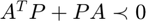
,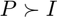
(continuous time) or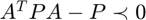
, (discrete time) with respect to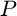
. We minimize the trace of . The user can easily modify the bounds in the LMIs or the LMIs themselves.Example of solving a continuous time problem
A=[0 1 0;0 0 1;-1 -2 -3];
penm = lyapu(A);
prob = PENLAB(penm);
solve(prob);
P=prob.Y{1};Example of solving a discrete time problem
A = [.7 -.2 -.1; .5 .4 0; 0 -.5 .9];
penm = dlyapu(A);
prob = PENLAB(penm);
solve(prob);
P=prob.Y{1};Truss topology optimization
Go to directory applications/TTO. Solve the basic truss topology optimization problem formulated as an LMI. For more details, see Section 7.2 from the PENLAB paper (directory tex/PENLAB_paper). Input data for many examples can be found in sub-directory GEO. Example:
>> solve_tto('GEO/t3x3.geo');Truss topology optimization with a buckling constraint
Go to directory applications/TTObuckling. Solve the truss topology optimization problem with a constraint on global stability (buckling). This leads to a nonlinear SDP problem. For more details, see Section 7.2 from the PENLAB paper (directory tex/PENLAB_paper). Input data for many examples can be found in sub-directory GEO. Example:
>> solve_ttob('GEO/t3x3.geo');Topology optimization, variable thickness sheet problem, primal formulation
Go to directory applications/VTSprimal. Solve the basic VTS problem formulated as an LMI. The formulation is analogous to the TTO problem above, only the data differ.
Example:
>> solve_vts;
Topology optimization, VTS problem, dual formulation
Go to directory applications/VTSdual. Solve the dual to the basic VTS problem. This is a convex problem with linear objective function and quadratic constraints.
Example:
>> solve_vts;
Other useful utilities
The following m-files can be found in directory utilities. For more details and examples, use the help command.
pen2bmi converts input structure pen for PENBMI (as described in PENOPT/PENBMI manual Section 5.2) into a structure accepted by PENLAB via BMI or PMI modules.
sed2pen converts SeDuMi input into PENBMI input structure pen (as described in PENOPT/PENBMI manual Section 5.2).
packmat is used for the vectorization of a symmetric matrix. It assumes a symmetric matrix on input and returns its 'L' packed representation i.e., a dense vector of length n*(n+1)/2 set up by columns of the lower triangle of the input matrix..
testmex tests whether the behaviour of all the mex files is correct.
Examples
Example 1 Consider the following nonlinear optimization problem
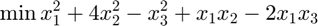
subject to
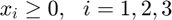
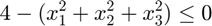
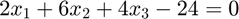
The corresponding object penm is defined by function ex1_define listed below and contained, together with the call back functions, in directory examples
function [penm] = ex1_define() penm = []; penm.probname = 'examples/ex1'; penm.comment = 'Source: user external definition of functions'; penm.Nx = 3; penm.lbx = zeros(3,1); penm.NgNLN = 1; penm.NgLIN = 1; penm.lbg = [4, 24]; penm.ubg = [Inf, 24]; penm.objfun = @ex1_objfun; penm.confun = @ex1_confun; penm.objgrad = @ex1_objgrad; penm.congrad = @ex1_congrad; penm.objhess = @ex1_objhess; penm.conhess = @ex1_conhess; end
To solve this example, we execute the following commands:
penm = ex1_define; prob = PENLAB(penm); prob.solve(); x = prob.x;
Example 2 Next, consider a toy nonlinear SDP example in two variables
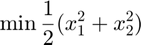
subject to
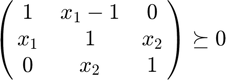
To define this example, we can use Matlab's anonymous functions:
function [penm] = bex1() B = sparse([1 -1 0; -1 1 0; 0 0 1]); A{1} = sparse([0 1 0; 1 0 0; 0 0 0]); A{2} = sparse([0 0 0; 0 0 1; 0 1 0]); penm = []; penm.probname = 'berlin_ex1'; penm.comment = 'quad objective with LMI'; penm.Nx=2; penm.NALIN=1; penm.lbA=zeros(1,1); penm.objfun = @(x,Y,userdata) deal(-.5*(x(1)^2+x(2)^2), userdata); penm.objgrad = @(x,Y,userdata) deal(-[x(1);x(2)], userdata); penm.objhess = @(x,Y,userdata) deal(-eye(2,2), userdata); penm.mconfun = @(x,Y,k,userdata) deal(B+A{1}*x(1)+A{2}*x(2), userdata); penm.mcongrad = @(x,Y,k,i,userdata) deal(A{i}, userdata); end
Example 3 Again a toy nonlinear SDP example, this time in six variables
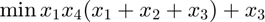
subject to
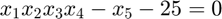
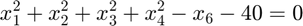
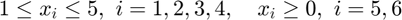
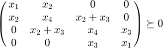
To define this example, we can again use Matlab's anonymous functions:
function [penm] = bex3() B = sparse(4,4); A{1} = sparse([1 0 0 0; 0 0 0 0; 0 0 0 0; 0 0 0 1]); A{2} = sparse([0 1 0 0; 1 0 1 0; 0 1 0 0; 0 0 0 0]); A{3} = sparse([0 0 0 0; 0 0 1 0; 0 1 0 1; 0 0 1 0]); A{4} = sparse([0 0 0 0; 0 1 0 0; 0 0 1 0; 0 0 0 0]); A{5} = sparse(4,4); A{6} = sparse(4,4); penm = []; penm.probname = 'berlin_ex3'; penm.comment = 'quad objective with LMI'; penm.Nx = 6; penm.lbx = [1;1;1;1;0;0]; penm.ubx = [5;5;5;5;Inf;Inf]; penm.NgNLN = 2; penm.lbg = [0;0]; penm.ubg = [0;0]; penm.NALIN=1; penm.lbA=zeros(1,1); penm.objfun = @(x,Y,userdata) deal(x(1)*x(4)*(x(1)+x(2)+x(3))+x(3), userdata); penm.objgrad = @(x,Y,userdata) deal([2*x(1)*x(4)+x(2)*x(4)+x(3)*x(4);... x(1)*x(4);... x(1)*x(4)+1;... x(1)^2+x(1)*x(2)+x(1)*x(3);... 0; 0], userdata); penm.objhess = @(x,Y,userdata) deal([2*x(4) x(4) x(4) 2*x(1)+x(2)+x(3) 0 0;... x(4) 0 0 x(1) 0 0;... x(4) 0 0 x(1) 0 0;... 2*x(1)+x(2)+x(3) x(1) x(1) 0 0 0;... 0 0 0 0 0 0; 0 0 0 0 0 0], userdata); penm.confun = @(x,Y,userdata) deal([x(1)*x(2)*x(3)*x(4)-x(5)-25;... x(1)^2+x(2)^2+x(3)^2+x(4)^2-x(6)-40], userdata); penm.congrad = @(x,Y,userdata) deal(... [x(2)*x(3)*x(4) x(1)*x(3)*x(4) x(1)*x(2)*x(4) x(1)*x(2)*x(3) -1 0;... 2*x(1) 2*x(2) 2*x(3) 2*x(4) 0 -1]', userdata); penm.conhess = @bex3_conhess; penm.mconfun = @(x,Y,k,userdata) deal(A{1}*x(1)+A{2}*x(2)+A{3}*x(3)+A{4}*x(4), userdata); penm.mcongrad = @(x,Y,k,i,userdata) deal(A{i}, userdata); end
The Hessian of the standard constraints cannot be defined by the anonymous function and is thus defined by function bex3_conhess shown below:
function [ddgk, userdata] = bex3_conhess(x,Y,k,userdata) switch(k) case (1) ddgk = [... 0 x(3)*x(4) x(2)*x(4) x(2)*x(3) 0 0; x(3)*x(4) 0 x(1)*x(4) x(1)*x(3) 0 0; x(2)*x(4) x(1)*x(4) 0 x(1)*x(2) 0 0; x(2)*x(3) x(1)*x(3) x(1)*x(2) 0 0 0; 0 0 0 0 0 0; 0 0 0 0 0 0]; case (2) ddgk = [... 2 0 0 0 0 0; 0 2 0 0 0 0; 0 0 2 0 0 0; 0 0 0 2 0 0; 0 0 0 0 0 0; 0 0 0 0 0 0]; end end
ans =
struct with fields:
probname: 'examples/ex1'
comment: 'Source: user external definition of functions'
Nx: 3
lbx: [3×1 double]
NgNLN: 1
NgLIN: 1
lbg: [4 24]
ubg: [Inf 24]
objfun: @ex1_objfun
confun: @ex1_confun
objgrad: @ex1_objgrad
congrad: @ex1_congrad
objhess: @ex1_objhess
conhess: @ex1_conhess
Notes
How to test that the Augmented Lagrangian is correct?
Use PENSDP/PENNON (PENNLP) to generate DCF files and use obj.setuptestpoint() to load the file. ... now use alselftest() [in utilities]
For PENSDP problems:
sdpdata=readsdpa('datafiles/truss1.dat-s'); penm=sdp_define(sdpdata); prob=PENLAB(penm); [alx,aldx,alddx] = setuptestpoint(prob,'datafiles/pensdpa_truss1.dcf','pensdp'); prob.eval_alx(); % alx vs. prob.ALx alx prob.ALx
For PENNLP problems:
penm=nlp_define('../../problems/ampl-nl/camshape100.nl'); prob=PENLAB(penm); [alx,aldx,alddx] = setuptestpoint(prob,'datafiles/pennlp_camshape100_a.dcf','pennlp'); prob.eval_alx(); prob.ALx alx
Other problems stored in ./datafiles:
truss1 - very small matrices, no inequalities
sdpdata=readsdpa('datafiles/truss1.dat-s');
[alx,aldx,alddx] = setuptestpoint(prob,'datafiles/pensdpa_truss1.dcf','pensdp');theta1 - one bigger matrix, no inequalitites
sdpdata=readsdpa('datafiles/theta1.dat-s');
[alx,aldx,alddx] = setuptestpoint(prob,'datafiles/pensdpa_theta1.dcf','pensdp');control1 - two bigger matrices
sdpdata=readsdpa('datafiles/control1.dat-s');
[alx,aldx,alddx] = setuptestpoint(prob,'datafiles/pensdpa_control1.dcf','pensdp');arch0 - one matrix & set of inequalitites
sdpdata=readsdpa('datafiles/arch0.dat-s');
[alx,aldx,alddx] = setuptestpoint(prob,'datafiles/pensdpa_arch0.dcf','pensdp');camshape100 - NLN ineq + LIN eq + BOX
penm=nlp_define('../../problems/ampl-nl/camshape100.nl');
[alx,aldx,alddx] = setuptestpoint(prob,'datafiles/pennlp_camshape100_a.dcf','pennlp');chain100 - 100 LIN eq + 1 NLN eq, no box (==> no penalties)
penm=nlp_define('../../problems/ampl-nl/chain100.nl');
[alx,aldx,alddx] = setuptestpoint(prob,'datafiles/pennlp_chain100_a.dcf','pennlp');israel - box + LIN ineq only (no equal)
penm=nlp_define('../../problems/ampl-nl/israel.nl');
[alx,aldx,alddx] = setuptestpoint(prob,'datafiles/pennlp_israel_a.dcf','pennlp');seba - box + LIN ineq & eq
penm=nlp_define('../../problems/ampl-nl/seba.nl');
[alx,aldx,alddx] = setuptestpoint(prob,'datafiles/pennlp_seba.dcf','pennlp');cosine - big & unconstrained
penm=nlp_define('../../problems/ampl-nl/cosine.nl');
[alx,aldx,alddx] = setuptestpoint(prob,'datafiles/pennlp_cosine.dcf','pennlp');Appendix 1, Glossary of penm elements
penm.probname penm.comment
penm.Nx penm.lbx penm.ubx
penm.NY
penm.Y{k} % k = 1,...,penm.NY
penm.lbY
penm.ubY
penm.lbYx{k} % k = 1,...,penm.NY
penm.ubYx{k} % k = 1,...,penm.NY
penm.NgNLN penm.NgLIN penm.lbg penm.ubg
penm.NANLN penm.NALIN penm.lbA penm.ubA
penm.objfun penm.objgrad penm.objhess
penm.confun penm.congrad penm.conhess
penm.mconfun penm.mcongrad
penm.xinit
penm.Yinit{k} % k = 1,...,penm.NY
Appendix 2, List of PENLAB options
For explanation of the option meanings, see PENNON manual.
default options
struct array: name, {default_value, type, restriction}
where name is the name of the option used in allopts or opts default_value (==> defopts(1) ~ default allopts structure)
restriction ... depending on the type, restriction to the accepted values
type: 'O' other, no restriction, no checking (e.g. usr_prn)
'S' string, no restriction
'I', 'R' integer or real within range restriction(1)~restriction(2)
'M' multiple choice - one of the elements in array restriction
defopts = struct(...
'outlev', {2, 'I', [0, Inf]}, ...
'outlev_file', {5, 'I', [0, Inf]}, ...
'out_filename', {'penm_log.txt', 'S', []}, ...
'user_prn', {[], 'O', []}, ...
'maxotiter', {100, 'I', [0, Inf]}, ...
'maxiniter', {100, 'I', [0, Inf]}, ...
... % from pennon.m
'penalty_update', {0.5, 'R', [0, 1]}, ... % PENALTY_UPDT
'penalty_update_bar', {0.3, 'R', [0, 1]}, ... % PENALTY_UPDT_BAR
'mpenalty_update', {0.5, 'R', [0, 1]}, ... %
'mpenalty_min', {1e-6, 'R', [0, 1]}, ... %
'mpenalty_border', {1e-6, 'R', [0, 1]}, ... %
'max_outer_iter', {100, 'I', [0, Inf]}, ... % MAX_PBMITER
'outer_stop_limit', {1e-6, 'R', [1e-20, 1]}, ...% PBMALPHA
'kkt_stop_limit', {1e-4, 'R', [1e-20, 1]}, ... % KKTALPHA
'mlt_update', {0.3, 'R', [0, 1]}, ... % MU
'mmlt_update', {0.1, 'R', [0, 1]}, ... % MU2
'uinit', {1, 'R', [-Inf, Inf]}, ... % UINIT
'uinit_box', {1, 'R', [-Inf, Inf]}, ... % UINIT_BOX
'uinit_eq', {0, 'R', [-Inf, Inf]}, ... % UINIT_EQ
'umin', {1e-10, 'R', [0, 1]}, ... % UMIN
'pinit', {1, 'R', [0, 1]}, ... % PINIT
'pinit_bar', {1, 'R', [0, 1]}, ... % PINIT_BAR
'usebarrier', {0, 'M', [0, 1]}, ... % USEBARRIER
... % from unconstr_min.m
'max_inner_iter', {100, 'I', [0, Inf]}, ... % MAX_MITER
'inner_stop_limit', {1e-2, 'R', [0, 1]}, ... % ALPHA
'unc_dir_stop_limit', {1e-2, 'R', [0, 1]}, ... % TOL_DIR
'unc_solver', {0, 'M', [0, 1, 2, 3, 4, 5]}, ... % solver
'unc_linesearch', {3, 'M', [0, 1, 2, 3]}, ... % linesearch
... % from eqconstr_min.m
'eq_dir_stop_limit', {1e-2, 'R', [0, 1]}, ... % TOL_DIR
'eq_solver', {0, 'M', [0, 1]}, ... % solver
'eq_linesearch', {3, 'M', [0, 1, 2, 3]}, ... % linesearch
'eq_solver_warn_max', {4, 'I', [0, 10]}, ... % solver_warn_max
'ls_short_max', {3, 'I', [0, 10]}, ... % ls_short_max
'min_recover_strategy', {0, 'M', [0, 1]}, ... % recover_strategy
'min_recover_max', {3, 'I', [0, 10]}, ... % recover_max
... % from phi2.m
'phi_R', {-0.5, 'R', [-1, 1]}, ... % R_default
... % linesearchs - ls_armijo.m
'max_ls_iter', {20, 'I', [0, Inf]}, ... % max tries before LS fails
'max_lseq_iter', {20, 'I', [0, Inf]}, ... % same for LS for equality constrained problems
'armijo_eps', {1e-2, 'R', [0, 1]}, ... % when is armijo step satisfactory? P(alp) - P(0) <= eps*alp*P'(0)
... % solve_simple_chol.m, solkvekkt_ldl.m, solvekkt_lu.m
'pert_update', {2., 'R', [0, 100]}, ... % known aka LMUPDATE, multiplier of the lambda-perturbation factor
'pert_min', {1e-6, 'R', [0, 1]}, ... % LMLOW, minimal (starting) perturbation
'pert_try_max', {50, 'I', [0, Inf]}, ... % max number of attempts to successfully perturbate a matrix
'pert_faster', {1, 'M', [0, 1]}, ... % use the last known negative curvature vector to determine perturbation
... % solve_simple_chol.m
'chol_ordering', {1, 'M', [0, 1]}, ... % use symamd for sparse matrices before Cholesky factor.?
... % solvers
'luk3_diag', {1., 'R', [0, Inf]} ... % diagonal of the (2,2)-block in Luksan 3 preconditioner
);Appendix 3, Definition of BMI input format
Use PMI input format described below with maximum degree 2.
Appendix 4, Definition of PMI input format
The user needs to prepare a structure pmidata that stores data for the following problem
min c'x + 1/2 x'Hx
s.t. lbg <= B*x <= ubg
lbx <= x <= ubx
A_k(x)>=0 for k=1,..,Nawhere
A_k(x) = sum_i x(multi-index(i))*Q_i
for example
A_k(x) = Q_1 + x_1*x_3*Q_2 + x_2*x_3*x_4*Q_3
where multi-indices are
midx_1 = 0 (absolute term, Q_1)
midx_2 = [1,3] (bilinear term, Q_2)
midx_3 = [2,3,4] (term for Q_3)List of elements of the user structure pmidata
name ... [optional] name of the problem Nx ..... number of primal variables Na ..... [optional] number of matrix inequalities (or diagonal blocks of the matrix constraint) xinit .. [optional] dim (Nx,1), starting point c ...... [optional] dim (Nx,1), coefficients of the linear obj. function, considered a zero vector if not present H ...... [optional] dim (Nx,Nx), Hessian for the obj. function, considered a zero matrix if not present lbx,ubx. [optional] dim (Nx,1) or scalars (1x1), lower and upper bound defining the box constraints B ...... [optional] dim(Ng,Nx), matrix defining the linear constraints lbg,ubg. [optional] dim (Ng,1) or scalars, upper and lower bounds for B
A ...... if Na>0, cell array of A{k} for k=1,...,Na each defining one matrix constraint; let's assume that A{k} has maximal order maxOrder and has nMat matrices defined, then A{k} should have the following elements: A{k}.Q - cell array of nMat (sparse) matrices of the same dimension A{k}.midx - (maxOrder x nMat) matrix defining the multi-indices for each matrix Q; use 0 within the multi-index to reduce the order for example, A{k}.Q{i} defines i-th matrix to which belongs multi-index A{k}.midx(:,i). If midx(:,i) = [1;3;0], it means that Q_i is multiplied by x_1*x_3 within the sum.